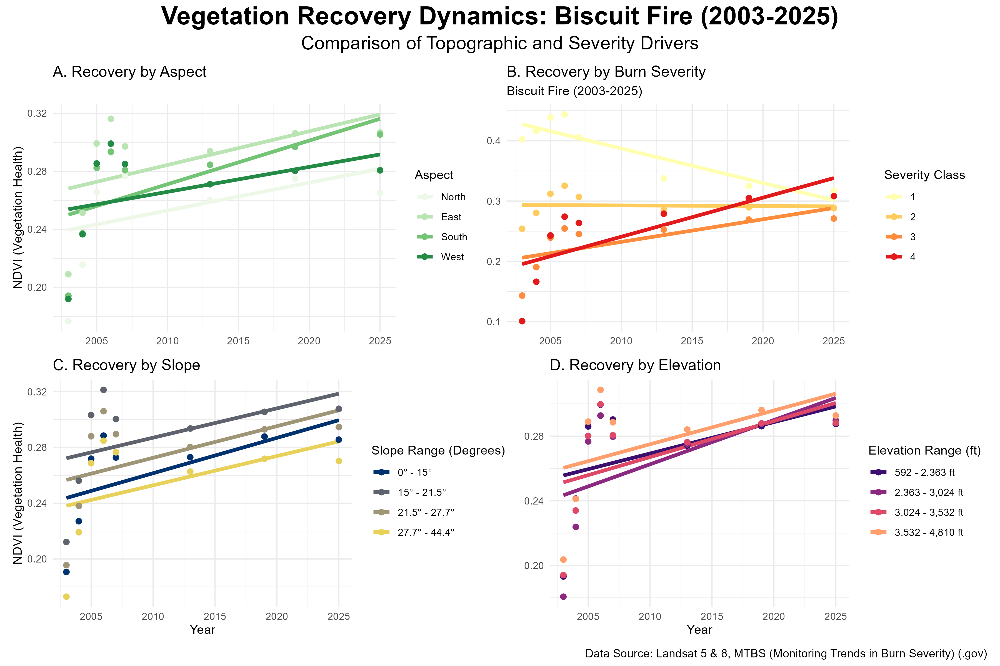

Oregon 2002 Biscuit Fire Regrowth Trends by Topography
Skills & Concepts Demonstrated
- Process remotely sensed imagery to address environmental questions: Evaluated 24 years of Landsat imagery to track NDVI and vegetation recovery.
- Identify and use appropriate algorithms for real-world projects: Conducted Linear Mixed Effects Modeling (LME) and Moran’s I tests for spatial autocorrelation.
- Understand how to manipulate and process spatial data: Extracted and analyzed slope, aspect, and elevation topographic variables from DEMs.
Programs Used & Data Sources
- Programs Used: R/RStudio (using
terra,sf,nlme, andspdeppackages). - Data Sources: Landsat 5 and 8 imagery, historical wildfire severity and perimeter data, and Digital Elevation Models (DEMs).
Project Summary
As the world continues to experience unprecedented changes to climate, some areas particularly in the western United States are finding themselves to be more prone to a higher quantity and severity wildfires. One of such wildfires was the Biscuit fire located in southern Oregon and northern California which burned nearly half a million acres across a highly diverse topographic landscape.
This study analyzed Normalized Difference Vegetation Index (NDVI) Values across a 24-year time span using Linear Mixed Effects Modeling (LME) to quantify the impacts of topography on vegetation recovery. Results indicate that while elevation influenced baseline vegetation, the density, slope, and aspect were found to have more significant effects on vegetation regrowth. It was found that steep slopes were associated with significantly slower regrowth rates perhaps due to hydrologic runoff and soil instability, and surprisingly, south facing slopes recovered faster than north facing slopes.
Key Figures & Analysis


